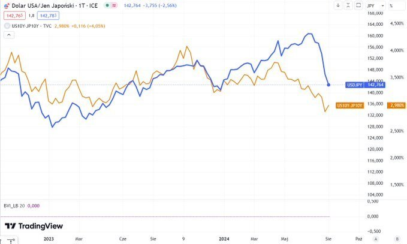
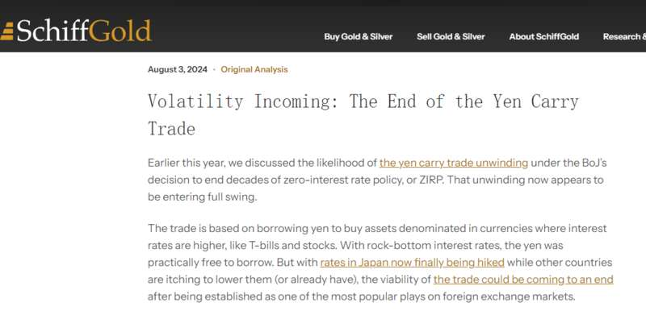
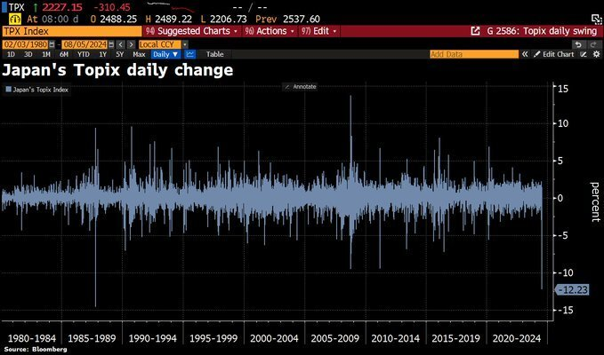

从上周二的失守154关口，到今日的一度跌穿143大关，在短短五个交易日的时候里，美元兑日元便一路重挫了逾1000点。
而日元的大幅升值和围绕于此的全球外汇套利交易的解除，似乎也已成为了不少研究近来全球股市暴跌的机构分析师，无论如何都无法回避的话题，尤其是对于日本市场的交易员而言。
事实上，眼下想要当好一位出色的股市交易员，你可能首先得成为一位优秀的外汇分析师……
一切得从日元暴涨说起
行情数据显示，在过去的一个月的时间里，日元兑美元的汇率已经累计上涨了逾10%，这与7月4日美国独立日假期前夕的情况形成了鲜明的对比，当时日元兑美元的汇率自1986年12月以来首次跌至1美元兑161.96日元。
不难看到的是，上周四至今，当全球股市跌幅迅速放大的时候，也是美元兑日元加速下跌之际。
日元上涨背后的原因，人们显然不难寻找：美日之间利差有望收窄。在上周的议息会议上，日本央行颇为激进地打出了“加息+QT”的紧缩政策组合拳，将短期政策利率从0-0.1%提高到0.25%，并宣布将月度资产购买计划从6万亿日元分阶段在明年降至3万亿日元。

而与此同时，在美联储上周发出暗示9月降息的信号，以及此后公布的多组美国经济数据表现异常惨淡之后，债券交易员纷纷押注美国经济正处于恶化的边缘，美联储将需要开始大举放松货币政策以避免经济衰退。
在上周五非农后，利率期货市场的交易员对今年年底前降息幅度的定价一度达到了约125个基点——相当于五次25个基点的降息，这表明如果美联储未在常规会议外紧急降息的话，其在年底的最后三次会议中，很可能有多达两次会议，会一口气降息50个基点。
美日货币政策一松一紧截然相反的政策走向，直接推动了日元如脱缰野马般的上涨。
而作为全球最为常见的融资货币，日元在短时间内的报复性升值，无疑也损害了在全球市场上颇为常见的套利交易的表现。此类交易通常涉及交易者以较低利率的货币进行借贷，投资于通常位于那些高收益资产——在利率长期处于最低水平的情况下，借入日元几乎是免费的。
加拿大皇家银行驻新加坡的亚洲货币策略主管Alvin Tan就表示，在最新数据显示美国失业率跃升至4.3%后，交易员们愈发开始担心美国经济衰退的风险。这对套息交易员来说是个糟糕的环境。
“经济衰退风险也意味着市场波动加大，因此套利交易会被削减，我认为这种情况很容易延续，因为我们已经在低波动环境中度过了很长时间，事实上已经超过一年了，”Tan表示。
为什么影响范围如此庞大？
对于许多交易员而言，如果他们此前用廉价的日元进行了融资，并投资在高息市场以套取高收益，那么现在则要同时赔上高收益资产(例如美股等)的跌幅和日元汇率的升幅(交易结束时需要还回日元)。这种惊人的逆转已引发了全球套利交易的“大清盘”。
在上月下旬，我们在“日元暴涨&科技股暴跌：这一切冥冥之中竟有关联？”其实已对此有过初步的介绍，而目前的情况，似乎要比当时还要严重。
中金公司在周末发布的一份研报中指出，套息交易的前提是无法对该交易实施汇率对冲，因此当日元升值时，息差所获得的利润会迅速被汇率所带来的损失给消耗殆尽，因此需要通过“卖出高息资产、买回日元”来平仓，平仓的同时会带来进一步的日元升值压力，进而带来更多的日元平仓，从而循环往复。
欧洲太平洋资产管理公司首席市场策略师彼得·希夫(Peter Schiff)在上周末也撰文表示，现在投资者能否几乎免费借贷的机会已经结束，他们开始了结围绕日元的套利交易，这导致了外汇和其他市场的波动加剧。

彼得·希夫指出，这对全球市场的潜在影响很多。日元波动可能给杠杆押注带来麻烦，有可能引发一波追加保证金的浪潮，从而引发更广泛的全球抛售。如果日元升值导致石油等大宗商品价格上涨，促使日本央行采取更多干预措施并进一步解除套利交易，这种风险会进一步加剧——希夫认为，这种情况可能会演变成全球市场的混乱。
希夫表示，长期以来，日元套利交易支持着全球牛市，因为它使廉价借贷能够投资于其他地方。而如今，日元套利交易的解除可能会导致日本以外的股市出现动荡。日本央行正处于进退维谷之中：究竟是应该保护日元、稳定股市、还是拯救政府债券(日本央行持有约一半的政府债券)？在希夫称之为货币和经济衔尾蛇的情况下，日本央行没有简单的解决方案。
无独有偶，ATFX Global Markets首席市场分析师Nick Twidale也表示，套利交易头寸出现了大规模投降，“每个人都在同一时间跑向门口。这些举动最初是由日本央行加息引发的，但在过去几天里，对全球经济增长的担忧也正在火上浇油，抛售变得激烈起来。”
日股缘何如此惨？
纵观近期的全球市场，人们在过去几个交易日不难发现的一个现象是，日股可谓是眼下全球市场中跌幅最为凄惨的——日经225指数周一收盘重挫12.4%，报31506点，已抹去今年以来所有涨幅。这是日经225指数史上最大下跌点数，超越1987年10月黑色星期一的纪录。

那么，日股的大跌又是否和外汇市场之间存在直接关联呢？答案显示是：YES。
事实上，即便抛开日元升值对日本出口商利润的严重打击不谈，从资金面而言，以往通过廉价日元借入的资金，有一部分也会直接投资于日本市场，而不再寻求在海外市场套利，尤其是在近年来日本股市持续上涨的背景下，就近在日本市场投资也愈发变为了一笔有利可图的交易。
人们过往几年最为耳熟能详的，无疑便是“股神”巴菲特发行日债投资日本商社的故事。
然而如今，这些海外投资者可能也将打起退堂鼓。据日本交易所集团公布的数据显示，在截至7月26日的一周内，外国投资者已经净卖出1.56万亿日元（约合107亿美元）的日本现金股票和期货，东证指数在此期间跌幅超过5%，为四年来最大。而此前，外国投资者曾是日股上涨的主要推手。
瑞穗证券的高级技术分析师三浦丰指出，“投资者正在抛售此前因日元贬值而预期业绩上调的股票。日本股市此前因日元贬值而被大量买入，这一前提条件正在瓦解。”
瑞士投资公司UBP Investments的高级基金经理扎希尔·卡恩则认为，“目前日本外汇和股市波动过大，长期的海外投资者暂时不会入场。即使那些滞后者希望入场，也会需要等待市场稳定。目前尚未听到同行的买卖消息。”
颇为有意思的是，在一些市场人士看来，目前金融市场最大的套利交易者恰恰是日本政府本身。
长期以来，日本政府以日本央行对国内储户施加的极低实际利率为自己“融资”，同时从期限更长的国内外资产中获得更高的回报。随着回报差距不断扩大，这为日本政府创造了额外的财政空间。至关重要的是，这些资金中有三分之一实际上是隔夜现金：如果央行提高利率，政府将不得不开始向所有银行支付资金，套利交易的盈利能力将很快开始减弱。
知名财经博客网站zerohedge指出，这一次，随着套利交易破裂，日本央行要么无所作为，眼睁睁看着经济崩溃，要么恐慌性地逆转上周的加息，并加大宽松政策力度，以遏制刚刚将日经225指数推入熊市的崩盘。然而无论是哪种情况，不幸的是，日本市场似乎都要完蛋了。
20万亿美元的日元套利交易，进入清算时刻了吗？
随着日元兑美元汇率朝140的关键点位反攻，德银提出了一个引人注目的问题：日本政府进行的20万亿美元的套利交易是否已经走到了尽头？
日元套利交易，简而言之，是指投资者借入低利率的日元，然后投资于收益率更高的资产，从而获得利差。该策略在过去四十年中一直是日本政府和金融机构的常规操作。
德银首席外汇策略师George Saravelos最新报告指出，套利交易的成功依赖于几个关键因素：低利率环境、日元的稳定以及全球资产的高收益率。随着通胀率持续上升，日本央行被迫加息，政府资产负债表的负债方将受到巨大打击。
德银指出，这一模式面临清算的风险，日本央行正面临进退两难的局面。
利率环境将不再支持套利交易
根据德银首席外汇策略师George Saravelos最新报告，日本政府通过发行低收益率的日本国债和利用银行储备来融资，同时在国内外资产上获得更高的回报。
过去十年中，日本央行实际上已经用贬值的日元替换了一半的日本政府债券存量，这些现金现在由银行持有。在资产方面，日本政府主要持有贷款，例如通过财政和投资贷款基金 (FILF)，以及外国资产，主要是通过日本最大的养老基金 (GPIF)持有。
该策略在一定程度上为日本政府提供了额外的财政空间，也在一定程度上解释，为什么近几十年来日本在公共债务/GDP比率超过200%且持续上升的情况下仍没有面临债务危机。
除此以外，更重要的是这笔债务的资产负债结构。
Saravelos解释称，日本政府的资产负债表总值约为GDP的500%或20万亿美元，简而言之，日本政府的资产负债表就是一笔巨大的套利交易，这是日本能够维持不断增长的名义债务水平的关键。
然而，套利交易策略的成功依赖于几个关键因素：低利率环境、日元的稳定以及全球资产的高收益率。如果这些条件发生变化，套利交易的盈利能力将受到严重影响。随着通胀率持续上升，日本央行被迫加息，政府资产负债表的负债方将受到巨大打击。
日本央行如何安全退出套利交易？
德银认为，一方面，如果日本央行实质性地收紧政策，提高利率，那么套利交易的成本将上升，迫使交易解除。另一方面，如果日本央行维持当前的低利率环境，这可能会导致金融压制，即通过人为压低利率来支持政府债务的融资。虽然短期内可以维持套利交易，但长期来看可能会带来严重的金融稳定风险，甚至可能导致日元崩溃。
Saravelos强调，无论选择哪条路径，都将对日本社会产生深远影响。如果套利交易解除，较富裕和中老年群体将面临更高的通胀和实际利率上升的风险；如果维持套利交易，较年轻和较贫穷的群体将因未来实际收入的下降而受损。
Saravelos提出，日本政府可以通过财政政策来缓解高通胀对经济和较年长家庭的影响。例如，政府可以增加转移支付来保护弱势群体，同时通过提高税收或削减支出来控制财政赤字。然而，这些措施需要谨慎设计，以避免对经济增长产生过度抑制作用。
他还认为，虽然财政整顿对经济活动可能有短期抑制影响，但通过平衡削减开支和税收增加，可以持续性地降低政府杠杆率，对经济增长的负面影响也更小。此外，财政政策的转变可能对长期利率前景产生重大影响，尤其是在应对未来战略性的地缘政治挑战时。